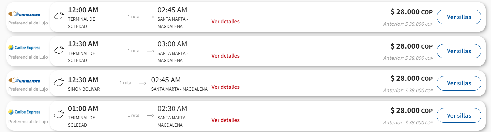

¿Por qué visitar Tayrona?
El Parque Tayrona combina playa, selva y cultura. Es un destino imperdible del Caribe colombiano, ideal para desconectarse del ruido y disfrutar de la naturaleza.
- El Parque Tayrona es hogar de más de 100 especies de mamíferos y 300 de aves.
- Fue territorio ancestral del pueblo Tayrona, cuyos descendientes aún habitan la Sierra Nevada.
- Es considerado uno de los parques naturales más bellos de Latinoamérica.
- En algunas zonas existen sitios sagrados indígenas, por eso el parque se cierra periódicamente para “descansar”.
Cómo llegar desde Barranquilla
El viaje desde Barranquilla a Santa Marta es bastante sencillo.
- Distancia: Aproximadamente 100 km.
- Duración: Entre 2 y 3 horas dependiendo del tráfico.
Transporte:
- Buses intermunicipales: Puedes tomar uno desde el Terminal de Transporte de Barranquilla hacia Santa Marta. Empresas como Expreso Brasilia o CooTransMagdalena operan esta ruta.
- Precio: Entre $30.000 y $45.000 COP por persona. 
- Carro particular: La carretera es buena (Troncal del Caribe). Hay peajes, uno cuesta aproximadamente $13.000 COP.
Una vez llegues a Santa Marta, puedes seguir hacia el Parque Tayrona.
Cómo llegar al Parque Tayrona desde Santa Marta
- Distancia: 34 km desde el centro de Santa Marta.
- Tiempo de viaje: 40 minutos a 1 hora.
- Desde el Mercado Público salen buses cada 30 minutos hacia El Zaino, la entrada principal del parque. 💸 Precio: Entre $10.000 y $15.000 COP.
- También puedes ir en taxi o carro particular (unos $80.000 COP aprox.).
Precios y entradas al Tayrona
- Entrada nacional (colombianos): Temporada baja: $32.000 COP / Temporada alta: $39.500 COP.
- Extranjeros: Temporada baja: $61.500 COP / Temporada alta: $73.500 COP.
- Seguro obligatorio: $6.000 a $10.000 COP por día.
- Camping o ecohabs: desde $50.000 COP hasta más de $300.000 COP por noche según el tipo de alojamiento.
Temporada alta: diciembre a enero, Semana Santa y mitad de año.
Horarios del Parque Tayrona
- Entrada: 8:00 a.m. – 4:00 p.m.
- Salida: hasta las 5:00 p.m.
El parque cierra tres veces al año para descanso ecológico (febrero, junio y noviembre).
Qué llevar
- Protector solar biodegradable.
- Ropa ligera y cómoda.
- Zapatos cerrados para caminar.
- Traje de baño y toalla.
- Repelente de insectos.
- Dinero en efectivo.
- Documentos de identidad y reserva si vas a quedarte.
Lugares imperdibles en Tayrona
- Cabo San Juan del Guía: el lugar más icónico del parque, ideal para acampar.
- Playa Cristal: aguas turquesas y tranquilas.
- Arrecifes y La Piscina: perfectas para nadar y hacer snorkel.
- Pueblito Chairama: una caminata exigente para conocer la cultura Tayrona.
Cosas a tener en cuenta
- No se permite el ingreso de plásticos de un solo uso ni mascotas.
- No hay señal de celular en gran parte del parque.
- Lleva suficiente agua, ya que dentro los precios son altos.
- Se recomienda entrar temprano para evitar largas filas.